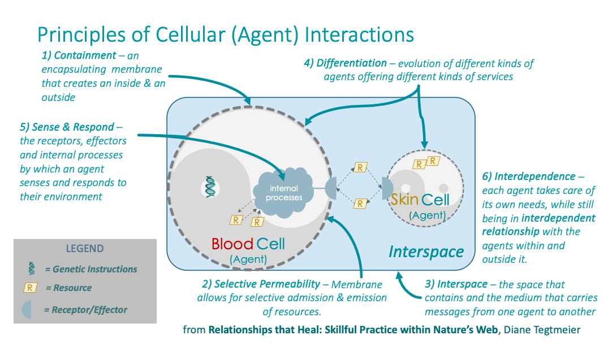

üߨ From Person to Planet: Sovereign Agents in Living Spaces¶
Person-Centric, Not App-Centric¶
Today’s digital world is app-centric. Each application defines its own silo — controlling the interface, data, and roles. Apps require you to sign-in -- i.e., to prove your digital identity to the app -- in order to access YOUR data that the app is hostaging. Your identity, data, and experience are fragmented across platforms. You’re treated as a user — subordinate to software, not sovereign in your own digital world.
The MAP flips this model. It is person-centric — placing you, the sovereign agent, at the center. You establish your I-Space — a private, membrane-bound realm where your identity, values, data, and relationships live under your control. Instead of signing in to apps, they must prove their integrity to YOU in order to be allowed to run (and store their data) in your I-Space.
From there, you grow outward — entering into relationships, forming agreements, and co-creating new Spaces of shared purpose.
What Is an Agent?¶
The MAP defines an **Agent as any being or entity capable of sensing and responding to its environment. Agents can be multi-dimensional — they often span multiple aspects at once:
- Biological: bodies, ecosystems, watersheds
- Social: families, co-ops, bioregional networks
- Technical: services, protocols, bots
You are an Agent — a biological person. But so is a bioregion: it has living systems (biological), communities (social), stories and traditions (cultural), and supporting infrastructure (technical).
Each Agent has an I-Space — a personal and private membrane-enclosed space where it expresses identity, stewards knowledge, and governs access.
The Cell as Metaphor¶
A Space in the MAP is like a living cell — the foundational unit of life and agency.
This metaphor is inspired by Diane Tegtmeier’s Principles of Cellular (Agent) Interactions, which illuminate how living systems coordinate at every level. Each Space:
- Contains — a membrane that defines an inside and outside
- Selectively Permits — admitting or excluding flows based on consent
- Exists in Interspace — in relationship to other agents across shared membranes
- Differentiates — expressing unique services and capabilities
- Senses and Responds — adapting to signals, context, and change
- Interdepends — sustaining mutual health through cooperation and autonomy

Based on the “Principles of Cellular (Agent) Interactions” from
Relationships that Heal: Skillful Practice within Nature’s Web by Diane Tegtmeier.
Anatomy of a MAP Agent¶
Each Agent is defined by a membrane, a Life Code, and a set of internal structures and services that support sovereign coordination and relational flow.
{kind=link}
- Life Code (a.k.a., memetic signature): Encodes the values and identity of the Agent, distinguishing what is exhibited or inhibited in action.
- Data Grove: Includes private keys, personas, app logic, sub-agents, and notification logic — all managed internally by the Agent's I-Space.
- Assets: Holons representing forms of Vital Capital (e.g., money, attention, trust, food) temporarily stewarded by the Agent.
- Service Implementation: The internal logic or capacity that enables the Agent to transform or route Vital Capital.
- Service Offering: What is exposed to others — the flows and promises the Agent is willing to participate in through Agreements.
The I-Space governs everything inside the membrane.
We-Spaces manage the boundaries and agreements between membranes. 
From Agents to Spaces¶
You are an Agent. But you may also steward sub-agents — like your laptop, smartphone, desktop, or delegated services. These sub-agents operate within your sovereign boundary, coordinated through your I-Space.
An Agreement Space is a membrane-bound collection of Agents and the medium of exchange through which they interact. It enables flows of Vital Capital — including trust, knowledge, commitments, and resources — among the agents it encloses.
In MAP, Spaces replace applications as the primary unit of coordination.
- Groups are primary. You don’t join an app — you form or join a Space.
- Governance is native. Each Space defines its own decision-making logic.
- Data is whole. Your data lives within your membrane — not scattered across clouds.
- Authentication flips. Apps don’t authenticate you — you grant them permission to act inside your Space.
Spaces Are Holons¶
Every Space is a Holon — a living part/whole that:
- Contains sub-agents and nested Spaces
- Participates in larger organisms (e.g., coalitions, bioregions, planetary networks)
- Declares its own Life Code, structure, and capacities
Holons are self-describing and active — not just static data, but interactive, meaningful units in a living graph.
A Holon is not just a record —
it’s a vessel of identity, interaction, and evolution in relationship.
From I-Space to We-Space¶
Every Agent begins in their I-Space — a private, sovereign domain.
But as relationships deepen and shared purpose emerges, We-Spaces are born.
We-Spaces are AgentSpaces — membrane-bound realms of shared intention, trust, and governance. They may be:
- A project team
- A co-op or DAO
- A bioregional network
- A family or movement
Each We-Space is capable of:
- Holding and managing shared capital
- Defining its own Life Code and governance
- Signing and fulfilling Agreements
- Adapting, learning, and evolving over time

Agreements Open the Membrane¶
Spaces are sovereign — they don’t interact by default.
Interaction happens through Agreements — consent-based bundles of Promises that define:
- Shared purpose and roles
- Permissions and thresholds
- Governance and capital flows
Each Agreement forms its own Agreement-Based AgentSpace, opening membrane gates between participants.
The membrane is semi-permeable — allowing trusted flow, while protecting sovereignty.
Assets and the Flow of Vital Capital¶
Spaces steward assets — forms of Vital Capital they hold in trust for members.
These include:
- Knowledge, narratives, and software
- Attention, care, or reputation
- Ecological and material resources
These assets flow between Spaces through Agreements.
MAP tracks the digital representation of these flows — but the flows are real.
The MAP is not the territory.
But it makes the territory’s flows legible, navigable, and actionable.
Fractal Holarchies of Coordination¶
AgentSpaces aren’t flat. They nest and evolve.
- I-Spaces give rise to We-Spaces
- We-Spaces may become Social Organisms
- Social Organisms participate in larger Weaves or Commons
This holonic structure supports:
- Scalable governance
- Distributed capital flow
- Interdependent identity and purpose
From individual to pod to bioregion —
the MAP enables coordination across biological, cultural, and technical layers.
A Living, Growing Tissue¶
Spaces divide, merge, specialize, or dissolve.
They are born from Promise Weaves — networks of interdependent commitments.
They evolve as coherence and identity deepen.
The MAP is not a static architecture.
It is a living tissue of Spaces — constantly forming, reforming, and expressing collective will.
Why Spaces Matter¶
Spaces re-center technology around living systems — not dead apps.
They allow us to:
- Govern ourselves — not be governed by platforms
- Own and protect our data — inside membranes we control
- Coordinate flows of value — not just money
- Express trust — not just permissions
- Build systems that reflect life — not extract it
In a world of apps, you’re a user.
In a world of Spaces, you’re a sovereign agent, a steward, a node in a living weave.